| 单移动副四杆机构 | |||
机构名称及尺寸条件 |
机构特性 |
机构传动函数及应用 |
|
曲柄滑块机构 |
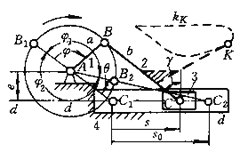 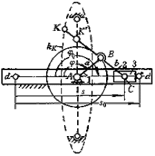 (1)曲柄1、连杆2的杆长分别为a和b,偏距为e (2)曲柄1整周转动的条件为b≥a+e (3)杆长比λ=a/b和ε=e/b (4)e≠0和ε=0时的曲柄滑块机构分别称为偏置和对心曲柄没块机构 (5)机构尺寸a=b或λ=1时称为等腰曲柄滑块机构 摆杆滑块机构 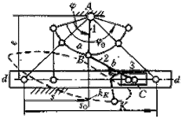 偏距e=0或e≠0 |
(1)曲柄1等速转动时,滑块3沿导路dd作往复变速移动 (2)滑块行程为 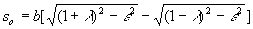 (λ≠1,e=0或e≠0,图a) s o =4a (λ=1,图b,K′为渡过运动不定位置的拨销) (3)滑块3急回行程平均速度增大系数 k=ψ2/ψ1=(180°+θ)/(180°-θ)式中极位夹角 θ=arccos[ε/(1+λ)]- arccos[ε/(1-λ)] (4)当曲柄1为主动时,机构无死点,当曲柄转至与滑块导路相垂直时,机构传动角λ 23min =arccos(λ+ε) (5)当滑块3为主动,且连杆与从动曲柄共线时,机构处于死点位置 (6)在图e摆杆滑块机构中,摆杆1往复摆动时,滑块3往复移动.当连杆2垂直于滑块导路dd时,机构处理死点位置,摆杆极限摆角 φ o =2arccos[(e-b)/a] 滑块行程 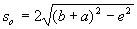 |
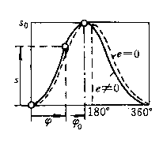 c)曲柄滑块机构 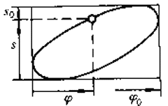 d)摆杆滑块机构 通常摆杆滑块机构只能实现一段函数或轨迹 (2)机构应用
|
导杆机构 |
曲柄转动导杆机构 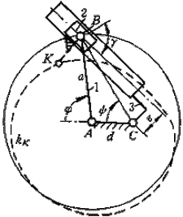 a.e≠0,a>d+e 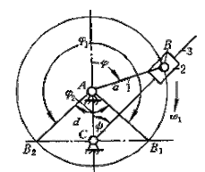 b.e=0,a>d(一般取a>2d) 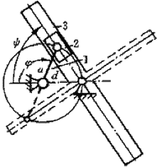 c.e=0,a=d |
(1)依据机构的尺寸关系,导杆机构分为偏置转动导杆机构(图a)和对心转动导杆机构(图b)以及等腰曲柄转动导杆机构(图c) (2)当曲柄1匀速转动时,导杆3作非匀速转动(图a和b)和匀速转动(图c) (3)机构平均传动化i 13 =n 1 /n 3 =1(图a和b): i 13 =n 1 /n 3 =2(图c) (4)机构的尺寸比d/a愈小,从动导杆3的角速度ω 3 波动愈大;而当d=a时,则ω 3 =1/2ω 1 =常数 (5)当滑块2导路垂直机架(图b即在CB 1 和CB 2 位置)时, ω 1 =ω 3 即i 13 =1 (6)当曲柄1为主动时,机构无死点,肯定γ 23 =90°(图b、c)和γ 23 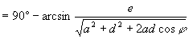 图(a) |
(1)机构传动函数为 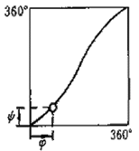 对心与偏置转动导杆机构 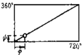 等腰曲柄转动导杆机构 (2)机构应用
|
曲柄摆动导杆机构 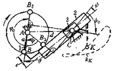 a.e≠0,a+e<d 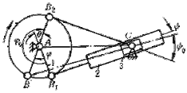 b.e=0,a<d |
(1)依据机构尺寸的不同,曲摆动导杆机构分为偏置摆动导杆机构(图a)和对心摆动导杆机构(图b) (2)曲柄1等速转动时,从动导杆3作往复变速摆动 (3)导杆3的摆角为ψ o, 且ψ o =arcsin[(a+e)/d]+ arcsin[(a-e)/d] (4)导杆3急回行程速度增大系数 k=φ o /(360°- φ o )=(180°+θ)/ (180°-θ) 式中θ=ψ o 通常k=2.5~3.5 (5)曲柄1主动时,机构无死点,而当导杆3为主动且从动曲柄与导杆导路中心线垂直时,如图示曲柄处于AB 1 和AB 2 位置时,为机构的死点位置 |
(1)机构传动函数为 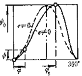 (2)机构应用
|
|